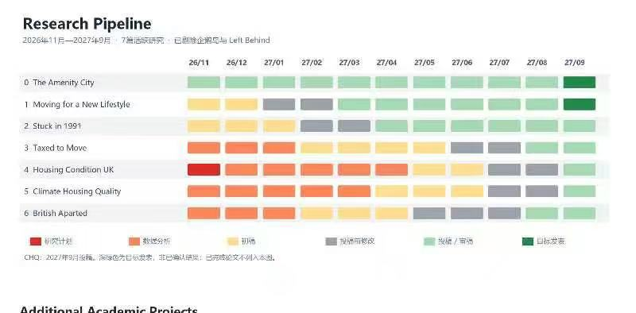

气候、住房质量：观点 / 综述文章
先梳理气候与住房质量的研究框架、主要论点和文献，为后续实证研究提供基础。
2026.11完稿，目标投稿或网上发布
RESEARCH PORTFOLIO · 2026—2027
先完成气候与住房质量的观点/综述文章，再推进 CHQ 更新和全英国住房质量研究。时间线展示已确定的交付目标；其余研究保留待排期状态。
01 / PIPELINE
2026 年 11 月 — 2027 年 9 月
| 项目 / 月份 | 26/11 | 26/12 | 27/01 | 27/02 | 27/03 | 27/04 | 27/05 | 27/06 | 27/07 | 27/08 | 27/09 |
|---|---|---|---|---|---|---|---|---|---|---|---|
| P03气候与住房质量观点 / 综述文章 | 发布/投稿 | ||||||||||
| P01Kenneth · CHQ 更新气候、住房质量与房价 | CHQ | 改稿 | 投稿 | ||||||||
| P02住房质量与儿童结果全英国测量 · UKHS | 测量 | UKHS | 初稿 | 投稿 | |||||||
| P04高层景观与房价研究范围待细化 | 待排期 · 尚未确定里程碑 | ||||||||||
| P05数据霸权研究范围待确定 | 待排期 · 尚未确定里程碑 | ||||||||||
2026.11 完稿；目标投稿或网上发布
2027.01 完成数据计算
2027.03 更新完稿件
2027.06 投稿
2027.02 完成全英国住房质量测量
2027.04 形成可分析的 UKHS 数据
2027.06 完成初稿
2027.09 投稿
待排期 · 尚未确定里程碑
待排期 · 尚未确定里程碑
彩色区间按截止日期倒排，是工作安排建议；带文字的月份对应已提出的目标节点。P03 完成后推进 P01、P02，P01 的 CHQ 结果是 P02 测量的基础。
REFERENCE

02 / PORTFOLIO
目标与范围
先梳理气候与住房质量的研究框架、主要论点和文献，为后续实证研究提供基础。
基于 P03 的框架更新 CHQ，完成数据计算及稿件更新；气候暴露、住房质量与房价的具体关系仍待定义。
在 CHQ 基础上加入 Airbnb、街景等多模态资料，测量全英国住房质量，并结合 UKHS 研究儿童长期结果。
研究景观与楼层高度如何影响房价；景观指标、价格数据和比较方法待确认。
研究目的、具体问题、所需数据与合作关系尚待定义。
03 / RESEARCH DESIGN
研究目的 · 数据 · 模型
扩展 CHQ 住房质量指标，形成全英国测量结果，并分析住房质量与儿童长期结果的关系。
需明确测量的空间单位、时间范围、儿童结果变量及追踪期限。
以 P01 更新版 CHQ 为基础，加入 Airbnb、街景和其他可用的多模态资料；通过 UKHS 获取儿童及家庭结果。
关键是覆盖范围、使用权限，以及住房质量与 UKHS 的地理和时间匹配。
构建可解释的住房质量测量，检查多模态数据加入后的覆盖率、稳定性和地区偏差。
再将测量结果与 UKHS 连接；结果模型及因果识别方案依实际数据确定。
04 / DEPENDENCIES
先落实关键资源
下一步确认已有数据、计算口径、获取权限，以及可引荐的数据持有人或合作者。
其余项目的联系人、数据持有人和合作渠道尚未记录。P05 的数据需求也需要在研究问题明确后再定义。